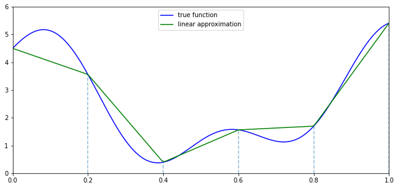
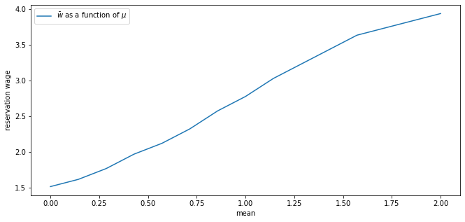
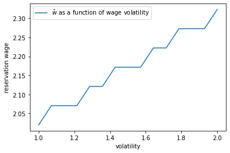

<!DOCTYPE html>

<html>
  <head>
    <meta charset="utf-8" />
    <meta name="viewport" content="width=device-width, initial-scale=1.0" /><meta name="generator" content="Docutils 0.17.1: http://docutils.sourceforge.net/" />

    <title>35. Job Search III: Fitted Value Function Iteration &#8212; Quantitative Economics with Python</title>
    <script src="https://unpkg.com/@popperjs/core@2.9.2/dist/umd/popper.min.js"></script>
    <script src="https://unpkg.com/tippy.js@6.3.1/dist/tippy-bundle.umd.js"></script>
    <script src="https://cdn.jsdelivr.net/npm/feather-icons/dist/feather.min.js"></script>
    
        <script>
            MathJax = {
            loader: {load: ['[tex]/boldsymbol', '[tex]/textmacros']},
            tex: {
                packages: {'[+]': ['boldsymbol', 'textmacros']},
                inlineMath: [['$', '$'], ['\\(', '\\)']],
                processEscapes: true,
                macros: {
                    "argmax" : "arg\\,max",
                    "argmin" : "arg\\,min",
                    "col"    : "col",
                    "Span"   :  "span",
                    "epsilon": "\\varepsilon",
                    "EE": "\\mathbb{E}",
                    "PP": "\\mathbb{P}",
                    "RR": "\\mathbb{R}",
                    "NN": "\\mathbb{N}",
                    "ZZ": "\\mathbb{Z}",
                    "aA": "\\mathcal{A}",
                    "bB": "\\mathcal{B}",
                    "cC": "\\mathcal{C}",
                    "dD": "\\mathcal{D}",
                    "eE": "\\mathcal{E}",
                    "fF": "\\mathcal{F}",
                    "gG": "\\mathcal{G}",
                    "hH": "\\mathcal{H}",
                }
            },
            svg: {
                fontCache: 'global',
                scale: 0.92,
                displayAlign: "center",
            },
            };
        </script>
    
    
    
  <link href="_static/css/theme.css" rel="stylesheet">
  <link href="_static/css/index.ff1ffe594081f20da1ef19478df9384b.css" rel="stylesheet">

    
  <link rel="stylesheet"
    href="_static/vendor/fontawesome/5.13.0/css/all.min.css">
  <link rel="preload" as="font" type="font/woff2" crossorigin
    href="_static/vendor/fontawesome/5.13.0/webfonts/fa-solid-900.woff2">
  <link rel="preload" as="font" type="font/woff2" crossorigin
    href="_static/vendor/fontawesome/5.13.0/webfonts/fa-brands-400.woff2">

    
      

    
    <link rel="stylesheet" type="text/css" href="_static/pygments.css" />
    <link rel="stylesheet" type="text/css" href="_static/quantecon-book-theme.1ef59f8f4e91ec8319176e8479c6af4e.css" />
    <link rel="stylesheet" type="text/css" href="_static/togglebutton.css" />
    <link rel="stylesheet" type="text/css" href="_static/copybutton.css" />
    <link rel="stylesheet" type="text/css" href="_static/mystnb.css" />
    <link rel="stylesheet" type="text/css" href="_static/sphinx-thebe.css" />
    <link rel="stylesheet" type="text/css" href="_static/panels-main.c949a650a448cc0ae9fd3441c0e17fb0.css" />
    <link rel="stylesheet" type="text/css" href="_static/panels-variables.06eb56fa6e07937060861dad626602ad.css" />
    
  <link rel="preload" as="script" href="_static/js/index.be7d3bbb2ef33a8344ce.js">


    <script data-url_root="./" id="documentation_options" src="_static/documentation_options.js"></script>
    <script src="_static/jquery.js"></script>
    <script src="_static/underscore.js"></script>
    <script src="_static/doctools.js"></script>
    <script src="_static/clipboard.min.js"></script>
    <script src="_static/copybutton.js"></script>
    <script>let toggleHintShow = 'Click to show';</script>
    <script>let toggleHintHide = 'Click to hide';</script>
    <script>let toggleOpenOnPrint = 'true';</script>
    <script src="_static/togglebutton.js"></script>
    <script>var togglebuttonSelector = '.toggle, .admonition.dropdown, .tag_hide_input div.cell_input, .tag_hide-input div.cell_input, .tag_hide_output div.cell_output, .tag_hide-output div.cell_output, .tag_hide_cell.cell, .tag_hide-cell.cell';</script>
    <script src="_static/sphinx-book-theme.d59cb220de22ca1c485ebbdc042f0030.js"></script>
    <script src="_static/quantecon-book-theme.15b0c36fffe88f468997fa7b698991d3.js"></script>
    <script async="async" src="https://cdn.jsdelivr.net/npm/mathjax@3/es5/tex-mml-svg.js"></script>
    <script>window.MathJax = {"tex": {"macros": {"argmax": "arg\\,max", "argmin": "arg\\,min"}}, "options": {"processHtmlClass": "tex2jax_process|mathjax_process|math|output_area"}}</script>
    <script async="async" src="https://unpkg.com/thebe@0.5.1/lib/index.js"></script>
    <script>
        const thebe_selector = ".thebe"
        const thebe_selector_input = "pre"
        const thebe_selector_output = ".output"
    </script>
    <script async="async" src="_static/sphinx-thebe.js"></script>
    <link rel="canonical" href="https://python.quantecon.org/mccall_fitted_vfi.html" />
    <link rel="shortcut icon" href="_static/lectures-favicon.ico"/>
    <link rel="index" title="Index" href="genindex.html" />
    <link rel="search" title="Search" href="search.html" />
    <link rel="next" title="36. Job Search IV: Correlated Wage Offers" href="mccall_correlated.html" />
    <link rel="prev" title="34. Job Search II: Search and Separation" href="mccall_model_with_separation.html" />

<!-- Normal Meta Tags -->
<meta name="author" context="Thomas J. Sargent &amp; John Stachurski" />
<meta name="keywords" content="Python, QuantEcon, Quantitative Economics, Economics, Sloan, Alfred P. Sloan Foundation, Tom J. Sargent, John Stachurski" />
<meta name="description" content=This website presents a set of lectures on quantitative economic modeling, designed and written by Thomas J. Sargent and John Stachurski. />

<!-- Twitter tags -->
<meta name="twitter:card" content="summary" />
<meta name="twitter:site" content="@quantecon" />
<meta name="twitter:title" content="Job Search III: Fitted Value Function Iteration"/>
<meta name="twitter:description" content="This website presents a set of lectures on quantitative economic modeling, designed and written by Thomas J. Sargent and John Stachurski.">
<meta name="twitter:creator" content="@quantecon">
<meta name="twitter:image" content="https://assets.quantecon.org/img/qe-twitter-logo.png">

<!-- Opengraph tags -->
<meta property="og:title" content="Job Search III: Fitted Value Function Iteration" />
<meta property="og:type" content="website" />
<meta property="og:url" content="https://python.quantecon.org/mccall_fitted_vfi.html" />
<meta property="og:image" content="https://assets.quantecon.org/img/qe-og-logo.png" />
<meta property="og:description" content="This website presents a set of lectures on quantitative economic modeling, designed and written by Thomas J. Sargent and John Stachurski." />
<meta property="og:site_name" content="Quantitative Economics with Python" />
<meta name="theme-color" content="#ffffff" />

  </head>
<body>


    <span id="top"></span>

    <div class="qe-wrapper">

        <div class="qe-main">

            <div class="qe-page" id=mccall_fitted_vfi>

                <div class="qe-page__toc">

                    <div class="inner">

                        
                        <div class="qe-page__toc-header">
                            On this page
                        </div>


                        <nav id="bd-toc-nav" class="qe-page__toc-nav">
                            <ul class="visible nav section-nav flex-column">
 <li class="toc-h2 nav-item toc-entry">
  <a class="reference internal nav-link" href="#overview">
   35.1. Overview
  </a>
 </li>
 <li class="toc-h2 nav-item toc-entry">
  <a class="reference internal nav-link" href="#the-algorithm">
   35.2. The Algorithm
  </a>
  <ul class="nav section-nav flex-column">
   <li class="toc-h3 nav-item toc-entry">
    <a class="reference internal nav-link" href="#value-function-iteration">
     35.2.1. Value Function Iteration
    </a>
   </li>
   <li class="toc-h3 nav-item toc-entry">
    <a class="reference internal nav-link" href="#fitted-value-function-iteration">
     35.2.2. Fitted Value Function Iteration
    </a>
   </li>
  </ul>
 </li>
 <li class="toc-h2 nav-item toc-entry">
  <a class="reference internal nav-link" href="#implementation">
   35.3. Implementation
  </a>
 </li>
 <li class="toc-h2 nav-item toc-entry">
  <a class="reference internal nav-link" href="#exercises">
   35.4. Exercises
  </a>
  <ul class="nav section-nav flex-column">
   <li class="toc-h3 nav-item toc-entry">
    <a class="reference internal nav-link" href="#exercise-1">
     35.4.1. Exercise 1
    </a>
   </li>
   <li class="toc-h3 nav-item toc-entry">
    <a class="reference internal nav-link" href="#exercise-2">
     35.4.2. Exercise 2
    </a>
   </li>
  </ul>
 </li>
 <li class="toc-h2 nav-item toc-entry">
  <a class="reference internal nav-link" href="#solutions">
   35.5. Solutions
  </a>
  <ul class="nav section-nav flex-column">
   <li class="toc-h3 nav-item toc-entry">
    <a class="reference internal nav-link" href="#id3">
     35.5.1. Exercise 1
    </a>
   </li>
   <li class="toc-h3 nav-item toc-entry">
    <a class="reference internal nav-link" href="#id4">
     35.5.2. Exercise 2
    </a>
   </li>
  </ul>
 </li>
</ul>

                            <p class="logo">
                                
                                    
                                    <a href=https://quantecon.org></a>
                                    
                                
                            </p>

                            <p class="powered">Powered by <a href="https://jupyterbook.org/">Jupyter Book</a></p>

                        </nav>

                        <div class="qe-page__toc-footer">
                            
                            
                            <p><a href="#top"><strong>Back to top</strong></a></p>
                        </div>

                    </div>

                </div>

                <div class="qe-page__header">

                    <div class="qe-page__header-copy">

                        <p class="qe-page__header-heading"><a href="intro.html">Quantitative Economics with Python</a></p>

                        <p class="qe-page__header-subheading">Job Search III: Fitted Value Function Iteration</p>

                    </div>

                    <p class="qe-page__header-authors">Thomas J. Sargent & John Stachurski</p>

                </div> <!-- .page__header -->


                
                <main class="qe-page__content" role="main">
                    
                    <div>
                        
  <div id="qe-notebook-header" align="right" style="text-align:right;">
        <a href="https://quantecon.org/" title="quantecon.org">
                
        </a>
</div><section class="tex2jax_ignore mathjax_ignore" id="job-search-iii-fitted-value-function-iteration">
<h1><a class="toc-backref" href="#id5"><span class="section-number">35. </span>Job Search III: Fitted Value Function Iteration</a><a class="headerlink" href="#job-search-iii-fitted-value-function-iteration" title="Permalink to this headline">¶</a></h1>
<div class="contents topic" id="contents">
<p class="topic-title">Contents</p>
<ul class="simple">
<li><p><a class="reference internal" href="#job-search-iii-fitted-value-function-iteration" id="id5">Job Search III: Fitted Value Function Iteration</a></p>
<ul>
<li><p><a class="reference internal" href="#overview" id="id6">Overview</a></p></li>
<li><p><a class="reference internal" href="#the-algorithm" id="id7">The Algorithm</a></p></li>
<li><p><a class="reference internal" href="#implementation" id="id8">Implementation</a></p></li>
<li><p><a class="reference internal" href="#exercises" id="id9">Exercises</a></p></li>
<li><p><a class="reference internal" href="#solutions" id="id10">Solutions</a></p></li>
</ul>
</li>
</ul>
</div>
<p>In addition to what’s in Anaconda, this lecture will need the following libraries:</p>
<div class="cell tag_hide-output docutils container">
<div class="cell_input docutils container">
<div class="highlight-ipython3 notranslate"><div class="highlight"><pre><span></span><span class="o">!</span>conda install -y quantecon
<span class="o">!</span>pip install interpolation
</pre></div>
</div>
</div>
<div class="cell_output docutils container">
<div class="output stream highlight-myst-ansi notranslate"><div class="highlight"><pre><span></span>Collecting package metadata (current_repodata.json): - 
</pre></div>
</div>
<div class="output stream highlight-myst-ansi notranslate"><div class="highlight"><pre><span></span>\ 
</pre></div>
</div>
<div class="output stream highlight-myst-ansi notranslate"><div class="highlight"><pre><span></span>| 
</pre></div>
</div>
<div class="output stream highlight-myst-ansi notranslate"><div class="highlight"><pre><span></span>/ 
</pre></div>
</div>
<div class="output stream highlight-myst-ansi notranslate"><div class="highlight"><pre><span></span>- 
</pre></div>
</div>
<div class="output stream highlight-myst-ansi notranslate"><div class="highlight"><pre><span></span>\ 
</pre></div>
</div>
<div class="output stream highlight-myst-ansi notranslate"><div class="highlight"><pre><span></span>| 
</pre></div>
</div>
<div class="output stream highlight-myst-ansi notranslate"><div class="highlight"><pre><span></span>/ 
</pre></div>
</div>
<div class="output stream highlight-myst-ansi notranslate"><div class="highlight"><pre><span></span>- 
</pre></div>
</div>
<div class="output stream highlight-myst-ansi notranslate"><div class="highlight"><pre><span></span>\ 
</pre></div>
</div>
<div class="output stream highlight-myst-ansi notranslate"><div class="highlight"><pre><span></span>| 
</pre></div>
</div>
<div class="output stream highlight-myst-ansi notranslate"><div class="highlight"><pre><span></span>/ 
</pre></div>
</div>
<div class="output stream highlight-myst-ansi notranslate"><div class="highlight"><pre><span></span>- 
</pre></div>
</div>
<div class="output stream highlight-myst-ansi notranslate"><div class="highlight"><pre><span></span>done
Solving environment: | 
</pre></div>
</div>
<div class="output stream highlight-myst-ansi notranslate"><div class="highlight"><pre><span></span>/ 
</pre></div>
</div>
<div class="output stream highlight-myst-ansi notranslate"><div class="highlight"><pre><span></span>- 
</pre></div>
</div>
<div class="output stream highlight-myst-ansi notranslate"><div class="highlight"><pre><span></span>\ 
</pre></div>
</div>
<div class="output stream highlight-myst-ansi notranslate"><div class="highlight"><pre><span></span>| 
</pre></div>
</div>
<div class="output stream highlight-myst-ansi notranslate"><div class="highlight"><pre><span></span>/ 
</pre></div>
</div>
<div class="output stream highlight-myst-ansi notranslate"><div class="highlight"><pre><span></span>- 
</pre></div>
</div>
<div class="output stream highlight-myst-ansi notranslate"><div class="highlight"><pre><span></span>\ 
</pre></div>
</div>
<div class="output stream highlight-myst-ansi notranslate"><div class="highlight"><pre><span></span>| 
</pre></div>
</div>
<div class="output stream highlight-myst-ansi notranslate"><div class="highlight"><pre><span></span>/ 
</pre></div>
</div>
<div class="output stream highlight-myst-ansi notranslate"><div class="highlight"><pre><span></span>- 
</pre></div>
</div>
<div class="output stream highlight-myst-ansi notranslate"><div class="highlight"><pre><span></span>\ 
</pre></div>
</div>
<div class="output stream highlight-myst-ansi notranslate"><div class="highlight"><pre><span></span>| 
</pre></div>
</div>
<div class="output stream highlight-myst-ansi notranslate"><div class="highlight"><pre><span></span>/ 
</pre></div>
</div>
<div class="output stream highlight-myst-ansi notranslate"><div class="highlight"><pre><span></span>- 
</pre></div>
</div>
<div class="output stream highlight-myst-ansi notranslate"><div class="highlight"><pre><span></span>\ 
</pre></div>
</div>
<div class="output stream highlight-myst-ansi notranslate"><div class="highlight"><pre><span></span>| 
</pre></div>
</div>
<div class="output stream highlight-myst-ansi notranslate"><div class="highlight"><pre><span></span>/ 
</pre></div>
</div>
<div class="output stream highlight-myst-ansi notranslate"><div class="highlight"><pre><span></span>- 
</pre></div>
</div>
<div class="output stream highlight-myst-ansi notranslate"><div class="highlight"><pre><span></span>\ 
</pre></div>
</div>
<div class="output stream highlight-myst-ansi notranslate"><div class="highlight"><pre><span></span>| 
</pre></div>
</div>
<div class="output stream highlight-myst-ansi notranslate"><div class="highlight"><pre><span></span>done
</pre></div>
</div>
<div class="output stream highlight-myst-ansi notranslate"><div class="highlight"><pre><span></span># All requested packages already installed.
</pre></div>
</div>
<div class="output stream highlight-myst-ansi notranslate"><div class="highlight"><pre><span></span>Collecting interpolation
</pre></div>
</div>
<div class="output stream highlight-myst-ansi notranslate"><div class="highlight"><pre><span></span>  Downloading interpolation-2.2.1-py3-none-any.whl (56 kB)
?25l
     |█████▉                          | 10 kB 41.0 MB/s eta 0:00:01
     |███████████▋                    | 20 kB 19.9 MB/s eta 0:00:01
     |█████████████████▍              | 30 kB 10.8 MB/s eta 0:00:01
     |███████████████████████▏        | 40 kB 5.5 MB/s eta 0:00:01
     |█████████████████████████████   | 51 kB 6.6 MB/s eta 0:00:01
     |████████████████████████████████| 56 kB 4.4 MB/s 
?25hRequirement already satisfied: numpy&gt;=1.18.1 in /usr/share/miniconda3/envs/quantecon/lib/python3.8/site-packages (from interpolation) (1.20.3)
</pre></div>
</div>
<div class="output stream highlight-myst-ansi notranslate"><div class="highlight"><pre><span></span>Collecting tempita&gt;=0.5.2
  Downloading Tempita-0.5.2-py3-none-any.whl (12 kB)
Requirement already satisfied: numba&gt;=0.47 in /usr/share/miniconda3/envs/quantecon/lib/python3.8/site-packages (from interpolation) (0.55.1)
Requirement already satisfied: scipy&gt;=1.4.1 in /usr/share/miniconda3/envs/quantecon/lib/python3.8/site-packages (from interpolation) (1.7.1)
Requirement already satisfied: llvmlite&lt;0.39,&gt;=0.38.0rc1 in /usr/share/miniconda3/envs/quantecon/lib/python3.8/site-packages (from numba&gt;=0.47-&gt;interpolation) (0.38.0)
Requirement already satisfied: setuptools in /usr/share/miniconda3/envs/quantecon/lib/python3.8/site-packages (from numba&gt;=0.47-&gt;interpolation) (58.0.4)
</pre></div>
</div>
<div class="output stream highlight-myst-ansi notranslate"><div class="highlight"><pre><span></span>Installing collected packages: tempita, interpolation
</pre></div>
</div>
<div class="output stream highlight-myst-ansi notranslate"><div class="highlight"><pre><span></span>Successfully installed interpolation-2.2.1 tempita-0.5.2
</pre></div>
</div>
</div>
</div>
<section id="overview">
<h2><a class="toc-backref" href="#id6"><span class="section-number">35.1. </span>Overview</a><a class="headerlink" href="#overview" title="Permalink to this headline">¶</a></h2>
<p>In this lecture we again study the <a class="reference internal" href="mccall_model_with_separation.html"><span class="doc">McCall job search model with separation</span></a>, but now with a continuous wage distribution.</p>
<p>While we already considered continuous wage distributions briefly in the
exercises of the <a class="reference internal" href="mccall_model.html"><span class="doc">first job search lecture</span></a>,
the change was relatively trivial in that case.</p>
<p>This is because we were able to reduce the problem to solving for a single
scalar value (the continuation value).</p>
<p>Here, with separation, the change is less trivial, since a continuous wage distribution leads to an uncountably infinite state space.</p>
<p>The infinite state space leads to additional challenges, particularly when it
comes to applying value function iteration (VFI).</p>
<p>These challenges will lead us to modify VFI by adding an interpolation step.</p>
<p>The combination of VFI and this interpolation step is called <strong>fitted value function iteration</strong> (fitted VFI).</p>
<p>Fitted VFI is very common in practice, so we will take some time to work through the details.</p>
<p>We will use the following imports:</p>
<div class="cell docutils container">
<div class="cell_input docutils container">
<div class="highlight-ipython3 notranslate"><div class="highlight"><pre><span></span><span class="o">%</span><span class="k">matplotlib</span> inline
<span class="kn">import</span> <span class="nn">matplotlib.pyplot</span> <span class="k">as</span> <span class="nn">plt</span>
<span class="n">plt</span><span class="o">.</span><span class="n">rcParams</span><span class="p">[</span><span class="s2">&quot;figure.figsize&quot;</span><span class="p">]</span> <span class="o">=</span> <span class="p">(</span><span class="mi">11</span><span class="p">,</span> <span class="mi">5</span><span class="p">)</span>  <span class="c1">#set default figure size</span>
<span class="kn">import</span> <span class="nn">numpy</span> <span class="k">as</span> <span class="nn">np</span>
<span class="kn">import</span> <span class="nn">quantecon</span> <span class="k">as</span> <span class="nn">qe</span>
<span class="kn">from</span> <span class="nn">interpolation</span> <span class="kn">import</span> <span class="n">interp</span>
<span class="kn">from</span> <span class="nn">numpy.random</span> <span class="kn">import</span> <span class="n">randn</span>
<span class="kn">from</span> <span class="nn">numba</span> <span class="kn">import</span> <span class="n">njit</span><span class="p">,</span> <span class="n">prange</span><span class="p">,</span> <span class="n">float64</span><span class="p">,</span> <span class="n">int32</span>
<span class="kn">from</span> <span class="nn">numba.experimental</span> <span class="kn">import</span> <span class="n">jitclass</span>
</pre></div>
</div>
</div>
</div>
</section>
<section id="the-algorithm">
<h2><a class="toc-backref" href="#id7"><span class="section-number">35.2. </span>The Algorithm</a><a class="headerlink" href="#the-algorithm" title="Permalink to this headline">¶</a></h2>
<p>The model is the same as the McCall model with job separation we <a class="reference internal" href="mccall_model_with_separation.html"><span class="doc">studied before</span></a>, except that the wage offer distribution is continuous.</p>
<p>We are going to start with the two Bellman equations we obtained for the model with job separation after <a class="reference internal" href="mccall_model_with_separation.html#ast-mcm"><span class="std std-ref">a simplifying transformation</span></a>.</p>
<p>Modified to accommodate continuous wage draws, they take the following form:</p>
<div class="math notranslate nohighlight" id="equation-bell1mcmc">
<span class="eqno">(35.1)<a class="headerlink" href="#equation-bell1mcmc" title="Permalink to this equation">¶</a></span>\[d = \int \max \left\{ v(w'), \,  u(c) + \beta d \right\} q(w') d w'\]</div>
<p>and</p>
<div class="math notranslate nohighlight" id="equation-bell2mcmc">
<span class="eqno">(35.2)<a class="headerlink" href="#equation-bell2mcmc" title="Permalink to this equation">¶</a></span>\[v(w) = u(w) + \beta
    \left[
        (1-\alpha)v(w) + \alpha d
    \right]\]</div>
<p>The unknowns here are the function <span class="math notranslate nohighlight">\(v\)</span> and the scalar <span class="math notranslate nohighlight">\(d\)</span>.</p>
<p>The difference between these and the pair of Bellman equations we previously worked on are</p>
<ol class="simple">
<li><p>in <a class="reference internal" href="#equation-bell1mcmc">(35.1)</a>, what used to be a sum over a finite number of wage values is an integral over an infinite set.</p></li>
<li><p>The function <span class="math notranslate nohighlight">\(v\)</span> in <a class="reference internal" href="#equation-bell2mcmc">(35.2)</a> is defined over all <span class="math notranslate nohighlight">\(w \in \mathbb R_+\)</span>.</p></li>
</ol>
<p>The function <span class="math notranslate nohighlight">\(q\)</span> in <a class="reference internal" href="#equation-bell1mcmc">(35.1)</a> is the density of the wage offer distribution.</p>
<p>Its support is taken as equal to <span class="math notranslate nohighlight">\(\mathbb R_+\)</span>.</p>
<section id="value-function-iteration">
<h3><span class="section-number">35.2.1. </span>Value Function Iteration<a class="headerlink" href="#value-function-iteration" title="Permalink to this headline">¶</a></h3>
<p>In theory, we should now proceed as follows:</p>
<ol class="simple">
<li><p>Begin with a guess <span class="math notranslate nohighlight">\(v, d\)</span> for the solutions to <a class="reference internal" href="#equation-bell1mcmc">(35.1)</a>–<a class="reference internal" href="#equation-bell2mcmc">(35.2)</a>.</p></li>
<li><p>Plug <span class="math notranslate nohighlight">\(v, d\)</span> into the right hand side of <a class="reference internal" href="#equation-bell1mcmc">(35.1)</a>–<a class="reference internal" href="#equation-bell2mcmc">(35.2)</a> and
compute the left hand side to obtain updates <span class="math notranslate nohighlight">\(v', d'\)</span></p></li>
<li><p>Unless some stopping condition is satisfied, set <span class="math notranslate nohighlight">\((v, d) = (v', d')\)</span>
and go to step 2.</p></li>
</ol>
<p>However, there is a problem we must confront before we implement this procedure:
The iterates of the value function can neither be calculated exactly nor stored on a computer.</p>
<p>To see the issue, consider <a class="reference internal" href="#equation-bell2mcmc">(35.2)</a>.</p>
<p>Even if <span class="math notranslate nohighlight">\(v\)</span> is a known function,  the only way to store its update <span class="math notranslate nohighlight">\(v'\)</span>
is to record its value <span class="math notranslate nohighlight">\(v'(w)\)</span> for every <span class="math notranslate nohighlight">\(w \in \mathbb R_+\)</span>.</p>
<p>Clearly, this is impossible.</p>
</section>
<section id="fitted-value-function-iteration">
<h3><span class="section-number">35.2.2. </span>Fitted Value Function Iteration<a class="headerlink" href="#fitted-value-function-iteration" title="Permalink to this headline">¶</a></h3>
<p>What we will do instead is use <strong>fitted value function iteration</strong>.</p>
<p>The procedure is as follows:</p>
<p>Let a current guess <span class="math notranslate nohighlight">\(v\)</span> be given.</p>
<p>Now we record the value of the function <span class="math notranslate nohighlight">\(v'\)</span> at only
finitely many “grid” points <span class="math notranslate nohighlight">\(w_1 &lt; w_2 &lt; \cdots &lt; w_I\)</span> and then reconstruct <span class="math notranslate nohighlight">\(v'\)</span> from this information when required.</p>
<p>More precisely, the algorithm will be</p>
<ol class="simple" id="fvi-alg">
<li><p>Begin with an array <span class="math notranslate nohighlight">\(\mathbf v\)</span> representing the values of an initial guess of the value function on some grid points <span class="math notranslate nohighlight">\(\{w_i\}\)</span>.</p></li>
<li><p>Build a function <span class="math notranslate nohighlight">\(v\)</span> on the state space <span class="math notranslate nohighlight">\(\mathbb R_+\)</span> by interpolation or approximation, based on <span class="math notranslate nohighlight">\(\mathbf v\)</span> and <span class="math notranslate nohighlight">\(\{ w_i\}\)</span>.</p></li>
<li><p>Obtain and record the samples of the updated function <span class="math notranslate nohighlight">\(v'(w_i)\)</span> on each grid point <span class="math notranslate nohighlight">\(w_i\)</span>.</p></li>
<li><p>Unless some stopping condition is satisfied, take this as the new array and go to step 1.</p></li>
</ol>
<p>How should we go about step 2?</p>
<p>This is a problem of function approximation, and there are many ways to approach it.</p>
<p>What’s important here is that the function approximation scheme must not only
produce a good approximation to each <span class="math notranslate nohighlight">\(v\)</span>, but also that it combines well with the broader iteration algorithm described above.</p>
<p>One good choice from both respects is continuous piecewise linear interpolation.</p>
<p>This method</p>
<ol class="simple">
<li><p>combines well with value function iteration (see., e.g.,
<span id="id1">[<a class="reference internal" href="zreferences.html#id43">Gor95</a>]</span> or <span id="id2">[<a class="reference internal" href="zreferences.html#id42">Sta08</a>]</span>) and</p></li>
<li><p>preserves useful shape properties such as monotonicity and concavity/convexity.</p></li>
</ol>
<p>Linear interpolation will be implemented using a JIT-aware Python interpolation library called <a class="reference external" href="https://github.com/EconForge/interpolation.py">interpolation.py</a>.</p>
<p>The next figure illustrates piecewise linear interpolation of an arbitrary
function on grid points <span class="math notranslate nohighlight">\(0, 0.2, 0.4, 0.6, 0.8, 1\)</span>.</p>
<div class="cell docutils container">
<div class="cell_input docutils container">
<div class="highlight-ipython3 notranslate"><div class="highlight"><pre><span></span><span class="k">def</span> <span class="nf">f</span><span class="p">(</span><span class="n">x</span><span class="p">):</span>
    <span class="n">y1</span> <span class="o">=</span> <span class="mi">2</span> <span class="o">*</span> <span class="n">np</span><span class="o">.</span><span class="n">cos</span><span class="p">(</span><span class="mi">6</span> <span class="o">*</span> <span class="n">x</span><span class="p">)</span> <span class="o">+</span> <span class="n">np</span><span class="o">.</span><span class="n">sin</span><span class="p">(</span><span class="mi">14</span> <span class="o">*</span> <span class="n">x</span><span class="p">)</span>
    <span class="k">return</span> <span class="n">y1</span> <span class="o">+</span> <span class="mf">2.5</span>

<span class="n">c_grid</span> <span class="o">=</span> <span class="n">np</span><span class="o">.</span><span class="n">linspace</span><span class="p">(</span><span class="mi">0</span><span class="p">,</span> <span class="mi">1</span><span class="p">,</span> <span class="mi">6</span><span class="p">)</span>
<span class="n">f_grid</span> <span class="o">=</span> <span class="n">np</span><span class="o">.</span><span class="n">linspace</span><span class="p">(</span><span class="mi">0</span><span class="p">,</span> <span class="mi">1</span><span class="p">,</span> <span class="mi">150</span><span class="p">)</span>

<span class="k">def</span> <span class="nf">Af</span><span class="p">(</span><span class="n">x</span><span class="p">):</span>
    <span class="k">return</span> <span class="n">interp</span><span class="p">(</span><span class="n">c_grid</span><span class="p">,</span> <span class="n">f</span><span class="p">(</span><span class="n">c_grid</span><span class="p">),</span> <span class="n">x</span><span class="p">)</span>

<span class="n">fig</span><span class="p">,</span> <span class="n">ax</span> <span class="o">=</span> <span class="n">plt</span><span class="o">.</span><span class="n">subplots</span><span class="p">()</span>

<span class="n">ax</span><span class="o">.</span><span class="n">plot</span><span class="p">(</span><span class="n">f_grid</span><span class="p">,</span> <span class="n">f</span><span class="p">(</span><span class="n">f_grid</span><span class="p">),</span> <span class="s1">&#39;b-&#39;</span><span class="p">,</span> <span class="n">label</span><span class="o">=</span><span class="s1">&#39;true function&#39;</span><span class="p">)</span>
<span class="n">ax</span><span class="o">.</span><span class="n">plot</span><span class="p">(</span><span class="n">f_grid</span><span class="p">,</span> <span class="n">Af</span><span class="p">(</span><span class="n">f_grid</span><span class="p">),</span> <span class="s1">&#39;g-&#39;</span><span class="p">,</span> <span class="n">label</span><span class="o">=</span><span class="s1">&#39;linear approximation&#39;</span><span class="p">)</span>
<span class="n">ax</span><span class="o">.</span><span class="n">vlines</span><span class="p">(</span><span class="n">c_grid</span><span class="p">,</span> <span class="n">c_grid</span> <span class="o">*</span> <span class="mi">0</span><span class="p">,</span> <span class="n">f</span><span class="p">(</span><span class="n">c_grid</span><span class="p">),</span> <span class="n">linestyle</span><span class="o">=</span><span class="s1">&#39;dashed&#39;</span><span class="p">,</span> <span class="n">alpha</span><span class="o">=</span><span class="mf">0.5</span><span class="p">)</span>

<span class="n">ax</span><span class="o">.</span><span class="n">legend</span><span class="p">(</span><span class="n">loc</span><span class="o">=</span><span class="s2">&quot;upper center&quot;</span><span class="p">)</span>

<span class="n">ax</span><span class="o">.</span><span class="n">set</span><span class="p">(</span><span class="n">xlim</span><span class="o">=</span><span class="p">(</span><span class="mi">0</span><span class="p">,</span> <span class="mi">1</span><span class="p">),</span> <span class="n">ylim</span><span class="o">=</span><span class="p">(</span><span class="mi">0</span><span class="p">,</span> <span class="mi">6</span><span class="p">))</span>
<span class="n">plt</span><span class="o">.</span><span class="n">show</span><span class="p">()</span>
</pre></div>
</div>
</div>
<div class="cell_output docutils container">

</div>
</div>
</section>
</section>
<section id="implementation">
<h2><a class="toc-backref" href="#id8"><span class="section-number">35.3. </span>Implementation</a><a class="headerlink" href="#implementation" title="Permalink to this headline">¶</a></h2>
<p>The first step is to build a jitted class for the McCall model with separation and
a continuous wage offer distribution.</p>
<p>We will take the utility function to be the log function for this application, with <span class="math notranslate nohighlight">\(u(c) = \ln c\)</span>.</p>
<p>We will adopt the lognormal distribution for wages, with <span class="math notranslate nohighlight">\(w = \exp(\mu + \sigma z)\)</span>
when <span class="math notranslate nohighlight">\(z\)</span> is standard normal and <span class="math notranslate nohighlight">\(\mu, \sigma\)</span> are parameters.</p>
<div class="cell docutils container">
<div class="cell_input docutils container">
<div class="highlight-ipython3 notranslate"><div class="highlight"><pre><span></span><span class="nd">@njit</span>
<span class="k">def</span> <span class="nf">lognormal_draws</span><span class="p">(</span><span class="n">n</span><span class="o">=</span><span class="mi">1000</span><span class="p">,</span> <span class="n">μ</span><span class="o">=</span><span class="mf">2.5</span><span class="p">,</span> <span class="n">σ</span><span class="o">=</span><span class="mf">0.5</span><span class="p">,</span> <span class="n">seed</span><span class="o">=</span><span class="mi">1234</span><span class="p">):</span>
    <span class="n">np</span><span class="o">.</span><span class="n">random</span><span class="o">.</span><span class="n">seed</span><span class="p">(</span><span class="n">seed</span><span class="p">)</span>
    <span class="n">z</span> <span class="o">=</span> <span class="n">np</span><span class="o">.</span><span class="n">random</span><span class="o">.</span><span class="n">randn</span><span class="p">(</span><span class="n">n</span><span class="p">)</span>
    <span class="n">w_draws</span> <span class="o">=</span> <span class="n">np</span><span class="o">.</span><span class="n">exp</span><span class="p">(</span><span class="n">μ</span> <span class="o">+</span> <span class="n">σ</span> <span class="o">*</span> <span class="n">z</span><span class="p">)</span>
    <span class="k">return</span> <span class="n">w_draws</span>
</pre></div>
</div>
</div>
</div>
<p>Here’s our class.</p>
<div class="cell docutils container">
<div class="cell_input docutils container">
<div class="highlight-ipython3 notranslate"><div class="highlight"><pre><span></span><span class="n">mccall_data_continuous</span> <span class="o">=</span> <span class="p">[</span>
    <span class="p">(</span><span class="s1">&#39;c&#39;</span><span class="p">,</span> <span class="n">float64</span><span class="p">),</span>          <span class="c1"># unemployment compensation</span>
    <span class="p">(</span><span class="s1">&#39;α&#39;</span><span class="p">,</span> <span class="n">float64</span><span class="p">),</span>          <span class="c1"># job separation rate</span>
    <span class="p">(</span><span class="s1">&#39;β&#39;</span><span class="p">,</span> <span class="n">float64</span><span class="p">),</span>          <span class="c1"># discount factor</span>
    <span class="p">(</span><span class="s1">&#39;σ&#39;</span><span class="p">,</span> <span class="n">float64</span><span class="p">),</span>          <span class="c1"># scale parameter in lognormal distribution</span>
    <span class="p">(</span><span class="s1">&#39;μ&#39;</span><span class="p">,</span> <span class="n">float64</span><span class="p">),</span>          <span class="c1"># location parameter in lognormal distribution</span>
    <span class="p">(</span><span class="s1">&#39;w_grid&#39;</span><span class="p">,</span> <span class="n">float64</span><span class="p">[:]),</span>  <span class="c1"># grid of points for fitted VFI</span>
    <span class="p">(</span><span class="s1">&#39;w_draws&#39;</span><span class="p">,</span> <span class="n">float64</span><span class="p">[:])</span>  <span class="c1"># draws of wages for Monte Carlo</span>
<span class="p">]</span>

<span class="nd">@jitclass</span><span class="p">(</span><span class="n">mccall_data_continuous</span><span class="p">)</span>
<span class="k">class</span> <span class="nc">McCallModelContinuous</span><span class="p">:</span>

    <span class="k">def</span> <span class="fm">__init__</span><span class="p">(</span><span class="bp">self</span><span class="p">,</span>
                 <span class="n">c</span><span class="o">=</span><span class="mi">1</span><span class="p">,</span>
                 <span class="n">α</span><span class="o">=</span><span class="mf">0.1</span><span class="p">,</span>
                 <span class="n">β</span><span class="o">=</span><span class="mf">0.96</span><span class="p">,</span>
                 <span class="n">grid_min</span><span class="o">=</span><span class="mf">1e-10</span><span class="p">,</span>
                 <span class="n">grid_max</span><span class="o">=</span><span class="mi">5</span><span class="p">,</span>
                 <span class="n">grid_size</span><span class="o">=</span><span class="mi">100</span><span class="p">,</span>
                 <span class="n">w_draws</span><span class="o">=</span><span class="n">lognormal_draws</span><span class="p">()):</span>

        <span class="bp">self</span><span class="o">.</span><span class="n">c</span><span class="p">,</span> <span class="bp">self</span><span class="o">.</span><span class="n">α</span><span class="p">,</span> <span class="bp">self</span><span class="o">.</span><span class="n">β</span> <span class="o">=</span> <span class="n">c</span><span class="p">,</span> <span class="n">α</span><span class="p">,</span> <span class="n">β</span>

        <span class="bp">self</span><span class="o">.</span><span class="n">w_grid</span> <span class="o">=</span> <span class="n">np</span><span class="o">.</span><span class="n">linspace</span><span class="p">(</span><span class="n">grid_min</span><span class="p">,</span> <span class="n">grid_max</span><span class="p">,</span> <span class="n">grid_size</span><span class="p">)</span>
        <span class="bp">self</span><span class="o">.</span><span class="n">w_draws</span> <span class="o">=</span> <span class="n">w_draws</span>

    <span class="k">def</span> <span class="nf">update</span><span class="p">(</span><span class="bp">self</span><span class="p">,</span> <span class="n">v</span><span class="p">,</span> <span class="n">d</span><span class="p">):</span>

        <span class="c1"># Simplify names</span>
        <span class="n">c</span><span class="p">,</span> <span class="n">α</span><span class="p">,</span> <span class="n">β</span><span class="p">,</span> <span class="n">σ</span><span class="p">,</span> <span class="n">μ</span> <span class="o">=</span> <span class="bp">self</span><span class="o">.</span><span class="n">c</span><span class="p">,</span> <span class="bp">self</span><span class="o">.</span><span class="n">α</span><span class="p">,</span> <span class="bp">self</span><span class="o">.</span><span class="n">β</span><span class="p">,</span> <span class="bp">self</span><span class="o">.</span><span class="n">σ</span><span class="p">,</span> <span class="bp">self</span><span class="o">.</span><span class="n">μ</span>
        <span class="n">w</span> <span class="o">=</span> <span class="bp">self</span><span class="o">.</span><span class="n">w_grid</span>
        <span class="n">u</span> <span class="o">=</span> <span class="k">lambda</span> <span class="n">x</span><span class="p">:</span> <span class="n">np</span><span class="o">.</span><span class="n">log</span><span class="p">(</span><span class="n">x</span><span class="p">)</span>

        <span class="c1"># Interpolate array represented value function</span>
        <span class="n">vf</span> <span class="o">=</span> <span class="k">lambda</span> <span class="n">x</span><span class="p">:</span> <span class="n">interp</span><span class="p">(</span><span class="n">w</span><span class="p">,</span> <span class="n">v</span><span class="p">,</span> <span class="n">x</span><span class="p">)</span>

        <span class="c1"># Update d using Monte Carlo to evaluate integral</span>
        <span class="n">d_new</span> <span class="o">=</span> <span class="n">np</span><span class="o">.</span><span class="n">mean</span><span class="p">(</span><span class="n">np</span><span class="o">.</span><span class="n">maximum</span><span class="p">(</span><span class="n">vf</span><span class="p">(</span><span class="bp">self</span><span class="o">.</span><span class="n">w_draws</span><span class="p">),</span> <span class="n">u</span><span class="p">(</span><span class="n">c</span><span class="p">)</span> <span class="o">+</span> <span class="n">β</span> <span class="o">*</span> <span class="n">d</span><span class="p">))</span>

        <span class="c1"># Update v</span>
        <span class="n">v_new</span> <span class="o">=</span> <span class="n">u</span><span class="p">(</span><span class="n">w</span><span class="p">)</span> <span class="o">+</span> <span class="n">β</span> <span class="o">*</span> <span class="p">((</span><span class="mi">1</span> <span class="o">-</span> <span class="n">α</span><span class="p">)</span> <span class="o">*</span> <span class="n">v</span> <span class="o">+</span> <span class="n">α</span> <span class="o">*</span> <span class="n">d</span><span class="p">)</span>

        <span class="k">return</span> <span class="n">v_new</span><span class="p">,</span> <span class="n">d_new</span>
</pre></div>
</div>
</div>
</div>
<p>We then return the current iterate as an approximate solution.</p>
<div class="cell docutils container">
<div class="cell_input docutils container">
<div class="highlight-ipython3 notranslate"><div class="highlight"><pre><span></span><span class="nd">@njit</span>
<span class="k">def</span> <span class="nf">solve_model</span><span class="p">(</span><span class="n">mcm</span><span class="p">,</span> <span class="n">tol</span><span class="o">=</span><span class="mf">1e-5</span><span class="p">,</span> <span class="n">max_iter</span><span class="o">=</span><span class="mi">2000</span><span class="p">):</span>
    <span class="sd">&quot;&quot;&quot;</span>
<span class="sd">    Iterates to convergence on the Bellman equations</span>

<span class="sd">    * mcm is an instance of McCallModel</span>
<span class="sd">    &quot;&quot;&quot;</span>

    <span class="n">v</span> <span class="o">=</span> <span class="n">np</span><span class="o">.</span><span class="n">ones_like</span><span class="p">(</span><span class="n">mcm</span><span class="o">.</span><span class="n">w_grid</span><span class="p">)</span>    <span class="c1"># Initial guess of v</span>
    <span class="n">d</span> <span class="o">=</span> <span class="mi">1</span>                           <span class="c1"># Initial guess of d</span>
    <span class="n">i</span> <span class="o">=</span> <span class="mi">0</span>
    <span class="n">error</span> <span class="o">=</span> <span class="n">tol</span> <span class="o">+</span> <span class="mi">1</span>

    <span class="k">while</span> <span class="n">error</span> <span class="o">&gt;</span> <span class="n">tol</span> <span class="ow">and</span> <span class="n">i</span> <span class="o">&lt;</span> <span class="n">max_iter</span><span class="p">:</span>
        <span class="n">v_new</span><span class="p">,</span> <span class="n">d_new</span> <span class="o">=</span> <span class="n">mcm</span><span class="o">.</span><span class="n">update</span><span class="p">(</span><span class="n">v</span><span class="p">,</span> <span class="n">d</span><span class="p">)</span>
        <span class="n">error_1</span> <span class="o">=</span> <span class="n">np</span><span class="o">.</span><span class="n">max</span><span class="p">(</span><span class="n">np</span><span class="o">.</span><span class="n">abs</span><span class="p">(</span><span class="n">v_new</span> <span class="o">-</span> <span class="n">v</span><span class="p">))</span>
        <span class="n">error_2</span> <span class="o">=</span> <span class="n">np</span><span class="o">.</span><span class="n">abs</span><span class="p">(</span><span class="n">d_new</span> <span class="o">-</span> <span class="n">d</span><span class="p">)</span>
        <span class="n">error</span> <span class="o">=</span> <span class="nb">max</span><span class="p">(</span><span class="n">error_1</span><span class="p">,</span> <span class="n">error_2</span><span class="p">)</span>
        <span class="n">v</span> <span class="o">=</span> <span class="n">v_new</span>
        <span class="n">d</span> <span class="o">=</span> <span class="n">d_new</span>
        <span class="n">i</span> <span class="o">+=</span> <span class="mi">1</span>

    <span class="k">return</span> <span class="n">v</span><span class="p">,</span> <span class="n">d</span>
</pre></div>
</div>
</div>
</div>
<p>Here’s a function <code class="docutils literal notranslate"><span class="pre">compute_reservation_wage</span></code> that takes an instance of <code class="docutils literal notranslate"><span class="pre">McCallModelContinuous</span></code>
and returns the associated reservation wage.</p>
<p>If <span class="math notranslate nohighlight">\(v(w) &lt; h\)</span> for all <span class="math notranslate nohighlight">\(w\)</span>, then the function returns np.inf</p>
<div class="cell docutils container">
<div class="cell_input docutils container">
<div class="highlight-ipython3 notranslate"><div class="highlight"><pre><span></span><span class="nd">@njit</span>
<span class="k">def</span> <span class="nf">compute_reservation_wage</span><span class="p">(</span><span class="n">mcm</span><span class="p">):</span>
    <span class="sd">&quot;&quot;&quot;</span>
<span class="sd">    Computes the reservation wage of an instance of the McCall model</span>
<span class="sd">    by finding the smallest w such that v(w) &gt;= h.</span>

<span class="sd">    If no such w exists, then w_bar is set to np.inf.</span>
<span class="sd">    &quot;&quot;&quot;</span>
    <span class="n">u</span> <span class="o">=</span> <span class="k">lambda</span> <span class="n">x</span><span class="p">:</span> <span class="n">np</span><span class="o">.</span><span class="n">log</span><span class="p">(</span><span class="n">x</span><span class="p">)</span>

    <span class="n">v</span><span class="p">,</span> <span class="n">d</span> <span class="o">=</span> <span class="n">solve_model</span><span class="p">(</span><span class="n">mcm</span><span class="p">)</span>
    <span class="n">h</span> <span class="o">=</span> <span class="n">u</span><span class="p">(</span><span class="n">mcm</span><span class="o">.</span><span class="n">c</span><span class="p">)</span> <span class="o">+</span> <span class="n">mcm</span><span class="o">.</span><span class="n">β</span> <span class="o">*</span> <span class="n">d</span>

    <span class="n">w_bar</span> <span class="o">=</span> <span class="n">np</span><span class="o">.</span><span class="n">inf</span>
    <span class="k">for</span> <span class="n">i</span><span class="p">,</span> <span class="n">wage</span> <span class="ow">in</span> <span class="nb">enumerate</span><span class="p">(</span><span class="n">mcm</span><span class="o">.</span><span class="n">w_grid</span><span class="p">):</span>
        <span class="k">if</span> <span class="n">v</span><span class="p">[</span><span class="n">i</span><span class="p">]</span> <span class="o">&gt;</span> <span class="n">h</span><span class="p">:</span>
            <span class="n">w_bar</span> <span class="o">=</span> <span class="n">wage</span>
            <span class="k">break</span>

    <span class="k">return</span> <span class="n">w_bar</span>
</pre></div>
</div>
</div>
</div>
<p>The exercises ask you to explore the solution and how it changes with parameters.</p>
</section>
<section id="exercises">
<h2><a class="toc-backref" href="#id9"><span class="section-number">35.4. </span>Exercises</a><a class="headerlink" href="#exercises" title="Permalink to this headline">¶</a></h2>
<section id="exercise-1">
<h3><span class="section-number">35.4.1. </span>Exercise 1<a class="headerlink" href="#exercise-1" title="Permalink to this headline">¶</a></h3>
<p>Use the code above to explore what happens to the reservation wage when the wage parameter <span class="math notranslate nohighlight">\(\mu\)</span>
changes.</p>
<p>Use the default parameters and <span class="math notranslate nohighlight">\(\mu\)</span> in <code class="docutils literal notranslate"><span class="pre">mu_vals</span> <span class="pre">=</span> <span class="pre">np.linspace(0.0,</span> <span class="pre">2.0,</span> <span class="pre">15)</span></code>.</p>
<p>Is the impact on the reservation wage as you expected?</p>
</section>
<section id="exercise-2">
<h3><span class="section-number">35.4.2. </span>Exercise 2<a class="headerlink" href="#exercise-2" title="Permalink to this headline">¶</a></h3>
<p>Let us now consider how the agent responds to an increase in volatility.</p>
<p>To try to understand this, compute the reservation wage when the wage offer
distribution is uniform on <span class="math notranslate nohighlight">\((m - s, m + s)\)</span> and <span class="math notranslate nohighlight">\(s\)</span> varies.</p>
<p>The idea here is that we are holding the mean constant and spreading the
support.</p>
<p>(This is a form of <em>mean-preserving spread</em>.)</p>
<p>Use <code class="docutils literal notranslate"><span class="pre">s_vals</span> <span class="pre">=</span> <span class="pre">np.linspace(1.0,</span> <span class="pre">2.0,</span> <span class="pre">15)</span></code> and <code class="docutils literal notranslate"><span class="pre">m</span> <span class="pre">=</span> <span class="pre">2.0</span></code>.</p>
<p>State how you expect the reservation wage to vary with <span class="math notranslate nohighlight">\(s\)</span>.</p>
<p>Now compute it.  Is this as you expected?</p>
</section>
</section>
<section id="solutions">
<h2><a class="toc-backref" href="#id10"><span class="section-number">35.5. </span>Solutions</a><a class="headerlink" href="#solutions" title="Permalink to this headline">¶</a></h2>
<section id="id3">
<h3><span class="section-number">35.5.1. </span>Exercise 1<a class="headerlink" href="#id3" title="Permalink to this headline">¶</a></h3>
<p>Here is one solution.</p>
<div class="cell docutils container">
<div class="cell_input docutils container">
<div class="highlight-ipython3 notranslate"><div class="highlight"><pre><span></span><span class="n">mcm</span> <span class="o">=</span> <span class="n">McCallModelContinuous</span><span class="p">()</span>
<span class="n">mu_vals</span> <span class="o">=</span> <span class="n">np</span><span class="o">.</span><span class="n">linspace</span><span class="p">(</span><span class="mf">0.0</span><span class="p">,</span> <span class="mf">2.0</span><span class="p">,</span> <span class="mi">15</span><span class="p">)</span>
<span class="n">w_bar_vals</span> <span class="o">=</span> <span class="n">np</span><span class="o">.</span><span class="n">empty_like</span><span class="p">(</span><span class="n">mu_vals</span><span class="p">)</span>

<span class="n">fig</span><span class="p">,</span> <span class="n">ax</span> <span class="o">=</span> <span class="n">plt</span><span class="o">.</span><span class="n">subplots</span><span class="p">()</span>

<span class="k">for</span> <span class="n">i</span><span class="p">,</span> <span class="n">m</span> <span class="ow">in</span> <span class="nb">enumerate</span><span class="p">(</span><span class="n">mu_vals</span><span class="p">):</span>
    <span class="n">mcm</span><span class="o">.</span><span class="n">w_draws</span> <span class="o">=</span> <span class="n">lognormal_draws</span><span class="p">(</span><span class="n">μ</span><span class="o">=</span><span class="n">m</span><span class="p">)</span>
    <span class="n">w_bar</span> <span class="o">=</span> <span class="n">compute_reservation_wage</span><span class="p">(</span><span class="n">mcm</span><span class="p">)</span>
    <span class="n">w_bar_vals</span><span class="p">[</span><span class="n">i</span><span class="p">]</span> <span class="o">=</span> <span class="n">w_bar</span>

<span class="n">ax</span><span class="o">.</span><span class="n">set</span><span class="p">(</span><span class="n">xlabel</span><span class="o">=</span><span class="s1">&#39;mean&#39;</span><span class="p">,</span> <span class="n">ylabel</span><span class="o">=</span><span class="s1">&#39;reservation wage&#39;</span><span class="p">)</span>
<span class="n">ax</span><span class="o">.</span><span class="n">plot</span><span class="p">(</span><span class="n">mu_vals</span><span class="p">,</span> <span class="n">w_bar_vals</span><span class="p">,</span> <span class="n">label</span><span class="o">=</span><span class="sa">r</span><span class="s1">&#39;$\bar w$ as a function of $\mu$&#39;</span><span class="p">)</span>
<span class="n">ax</span><span class="o">.</span><span class="n">legend</span><span class="p">()</span>

<span class="n">plt</span><span class="o">.</span><span class="n">show</span><span class="p">()</span>
</pre></div>
</div>
</div>
<div class="cell_output docutils container">

</div>
</div>
<p>Not surprisingly, the agent is more inclined to wait when the distribution of
offers shifts to the right.</p>
</section>
<section id="id4">
<h3><span class="section-number">35.5.2. </span>Exercise 2<a class="headerlink" href="#id4" title="Permalink to this headline">¶</a></h3>
<p>Here is one solution.</p>
<div class="cell docutils container">
<div class="cell_input docutils container">
<div class="highlight-ipython3 notranslate"><div class="highlight"><pre><span></span><span class="n">mcm</span> <span class="o">=</span> <span class="n">McCallModelContinuous</span><span class="p">()</span>
<span class="n">s_vals</span> <span class="o">=</span> <span class="n">np</span><span class="o">.</span><span class="n">linspace</span><span class="p">(</span><span class="mf">1.0</span><span class="p">,</span> <span class="mf">2.0</span><span class="p">,</span> <span class="mi">15</span><span class="p">)</span>
<span class="n">m</span> <span class="o">=</span> <span class="mf">2.0</span>
<span class="n">w_bar_vals</span> <span class="o">=</span> <span class="n">np</span><span class="o">.</span><span class="n">empty_like</span><span class="p">(</span><span class="n">s_vals</span><span class="p">)</span>

<span class="n">fig</span><span class="p">,</span> <span class="n">ax</span> <span class="o">=</span> <span class="n">plt</span><span class="o">.</span><span class="n">subplots</span><span class="p">()</span>

<span class="k">for</span> <span class="n">i</span><span class="p">,</span> <span class="n">s</span> <span class="ow">in</span> <span class="nb">enumerate</span><span class="p">(</span><span class="n">s_vals</span><span class="p">):</span>
    <span class="n">a</span><span class="p">,</span> <span class="n">b</span> <span class="o">=</span> <span class="n">m</span> <span class="o">-</span> <span class="n">s</span><span class="p">,</span> <span class="n">m</span> <span class="o">+</span> <span class="n">s</span>
    <span class="n">mcm</span><span class="o">.</span><span class="n">w_draws</span> <span class="o">=</span> <span class="n">np</span><span class="o">.</span><span class="n">random</span><span class="o">.</span><span class="n">uniform</span><span class="p">(</span><span class="n">low</span><span class="o">=</span><span class="n">a</span><span class="p">,</span> <span class="n">high</span><span class="o">=</span><span class="n">b</span><span class="p">,</span> <span class="n">size</span><span class="o">=</span><span class="mi">10_000</span><span class="p">)</span>
    <span class="n">w_bar</span> <span class="o">=</span> <span class="n">compute_reservation_wage</span><span class="p">(</span><span class="n">mcm</span><span class="p">)</span>
    <span class="n">w_bar_vals</span><span class="p">[</span><span class="n">i</span><span class="p">]</span> <span class="o">=</span> <span class="n">w_bar</span>

<span class="n">ax</span><span class="o">.</span><span class="n">set</span><span class="p">(</span><span class="n">xlabel</span><span class="o">=</span><span class="s1">&#39;volatility&#39;</span><span class="p">,</span> <span class="n">ylabel</span><span class="o">=</span><span class="s1">&#39;reservation wage&#39;</span><span class="p">)</span>
<span class="n">ax</span><span class="o">.</span><span class="n">plot</span><span class="p">(</span><span class="n">s_vals</span><span class="p">,</span> <span class="n">w_bar_vals</span><span class="p">,</span> <span class="n">label</span><span class="o">=</span><span class="sa">r</span><span class="s1">&#39;$\bar w$ as a function of wage volatility&#39;</span><span class="p">)</span>
<span class="n">ax</span><span class="o">.</span><span class="n">legend</span><span class="p">()</span>

<span class="n">plt</span><span class="o">.</span><span class="n">show</span><span class="p">()</span>
</pre></div>
</div>
</div>
<div class="cell_output docutils container">

</div>
</div>
<p>The reservation wage increases with volatility.</p>
<p>One might think that higher volatility would make the agent more inclined to
take a given offer, since doing so represents certainty and waiting represents
risk.</p>
<p>But job search is like holding an option: the worker is only exposed to upside risk (since, in a free market, no one can force them to take a bad offer).</p>
<p>More volatility means higher upside potential, which encourages the agent to wait.</p>
</section>
</section>
</section>

    <script type="text/x-thebe-config">
    {
        requestKernel: true,
        binderOptions: {
            repo: "binder-examples/jupyter-stacks-datascience",
            ref: "master",
        },
        codeMirrorConfig: {
            theme: "abcdef",
            mode: "python"
        },
        kernelOptions: {
            kernelName: "python3",
            path: "./."
        },
        predefinedOutput: true
    }
    </script>
    <script>kernelName = 'python3'</script>

                    </div>
                    
                </main> <!-- .page__content -->
                


                <footer class="qe-page__footer">

                    <p><a href="https://creativecommons.org/licenses/by-sa/4.0/"></a></p>

                    <p>Creative Commons License &ndash; This work is licensed under a Creative Commons Attribution-ShareAlike 4.0 International.</p>

                </footer> <!-- .page__footer -->

            </div> <!-- .page -->

            

            
            <div class="qe-sidebar bd-sidebar inactive" id="site-navigation">

                <div class="qe-sidebar__header">


                    Contents

                </div>

                <nav class="qe-sidebar__nav" id="qe-sidebar-nav" aria-label="Main navigation">
                    <p aria-level="2" class="caption" role="heading">
 <span class="caption-text">
  Tools and Techniques
 </span>
</p>
<ul class="nav bd-sidenav nav sidenav_l1">
 <li class="toctree-l1">
  <a class="reference internal" href="geom_series.html">
   1. Geometric Series for Elementary Economics
  </a>
 </li>
 <li class="toctree-l1">
  <a class="reference internal" href="sir_model.html">
   2. Modeling COVID 19
  </a>
 </li>
 <li class="toctree-l1">
  <a class="reference internal" href="linear_algebra.html">
   3. Linear Algebra
  </a>
 </li>
 <li class="toctree-l1">
  <a class="reference internal" href="qr_decomp.html">
   4. QR Decomposition
  </a>
 </li>
 <li class="toctree-l1">
  <a class="reference internal" href="complex_and_trig.html">
   5. Complex Numbers and Trigonometry
  </a>
 </li>
 <li class="toctree-l1">
  <a class="reference internal" href="eig_circulant.html">
   6. Circulant Matrices
  </a>
 </li>
</ul>
<p aria-level="2" class="caption" role="heading">
 <span class="caption-text">
  Elementary Statistics
 </span>
</p>
<ul class="nav bd-sidenav nav sidenav_l1">
 <li class="toctree-l1">
  <a class="reference internal" href="lln_clt.html">
   7. LLN and CLT
  </a>
 </li>
 <li class="toctree-l1">
  <a class="reference internal" href="prob_meaning.html">
   8. Two Meanings of Probability
  </a>
 </li>
 <li class="toctree-l1">
  <a class="reference internal" href="multi_hyper.html">
   9. Multivariate Hypergeometric Distribution
  </a>
 </li>
 <li class="toctree-l1">
  <a class="reference internal" href="multivariate_normal.html">
   10. Multivariate Normal Distribution
  </a>
 </li>
 <li class="toctree-l1">
  <a class="reference internal" href="heavy_tails.html">
   11. Heavy-Tailed Distributions
  </a>
 </li>
 <li class="toctree-l1">
  <a class="reference internal" href="hoist_failure.html">
   12. Fault Tree Uncertainties
  </a>
 </li>
 <li class="toctree-l1">
  <a class="reference internal" href="time_series_with_matrices.html">
   13. Univariate Time Series with Matrix Algebra
  </a>
 </li>
 <li class="toctree-l1">
  <a class="reference internal" href="back_prop.html">
   14. Introduction to Artificial Neural Networks
  </a>
 </li>
 <li class="toctree-l1">
  <a class="reference internal" href="rand_resp.html">
   15. Randomized Response Surveys
  </a>
 </li>
 <li class="toctree-l1">
  <a class="reference internal" href="util_rand_resp.html">
   16. Expected Utilities of Random Responses
  </a>
 </li>
 <li class="toctree-l1">
  <a class="reference internal" href="svd_intro.html">
   17. Singular Value Decomposition (SVD)
  </a>
 </li>
</ul>
<p aria-level="2" class="caption" role="heading">
 <span class="caption-text">
  Linear Programming
 </span>
</p>
<ul class="nav bd-sidenav nav sidenav_l1">
 <li class="toctree-l1">
  <a class="reference internal" href="lp_intro.html">
   18. Linear Programming
  </a>
 </li>
 <li class="toctree-l1">
  <a class="reference internal" href="opt_transport.html">
   19. Optimal Transport
  </a>
 </li>
 <li class="toctree-l1">
  <a class="reference internal" href="von_neumann_model.html">
   20. Von Neumann Growth Model (and a Generalization)
  </a>
 </li>
</ul>
<p aria-level="2" class="caption" role="heading">
 <span class="caption-text">
  Introduction to Dynamics
 </span>
</p>
<ul class="nav bd-sidenav nav sidenav_l1">
 <li class="toctree-l1">
  <a class="reference internal" href="scalar_dynam.html">
   21. Dynamics in One Dimension
  </a>
 </li>
 <li class="toctree-l1">
  <a class="reference internal" href="ar1_processes.html">
   22. AR1 Processes
  </a>
 </li>
 <li class="toctree-l1">
  <a class="reference internal" href="finite_markov.html">
   23. Finite Markov Chains
  </a>
 </li>
 <li class="toctree-l1">
  <a class="reference internal" href="inventory_dynamics.html">
   24. Inventory Dynamics
  </a>
 </li>
 <li class="toctree-l1">
  <a class="reference internal" href="linear_models.html">
   25. Linear State Space Models
  </a>
 </li>
 <li class="toctree-l1">
  <a class="reference internal" href="samuelson.html">
   26. Samuelson Multiplier-Accelerator
  </a>
 </li>
 <li class="toctree-l1">
  <a class="reference internal" href="kesten_processes.html">
   27. Kesten Processes and Firm Dynamics
  </a>
 </li>
 <li class="toctree-l1">
  <a class="reference internal" href="wealth_dynamics.html">
   28. Wealth Distribution Dynamics
  </a>
 </li>
 <li class="toctree-l1">
  <a class="reference internal" href="kalman.html">
   29. A First Look at the Kalman Filter
  </a>
 </li>
 <li class="toctree-l1">
  <a class="reference internal" href="short_path.html">
   30. Shortest Paths
  </a>
 </li>
 <li class="toctree-l1">
  <a class="reference internal" href="cass_koopmans_1.html">
   31. Cass-Koopmans Planning Problem
  </a>
 </li>
 <li class="toctree-l1">
  <a class="reference internal" href="cass_koopmans_2.html">
   32. Cass-Koopmans Competitive Equilibrium
  </a>
 </li>
</ul>
<p aria-level="2" class="caption" role="heading">
 <span class="caption-text">
  Search
 </span>
</p>
<ul class="current nav bd-sidenav nav sidenav_l1">
 <li class="toctree-l1">
  <a class="reference internal" href="mccall_model.html">
   33. Job Search I: The McCall Search Model
  </a>
 </li>
 <li class="toctree-l1">
  <a class="reference internal" href="mccall_model_with_separation.html">
   34. Job Search II: Search and Separation
  </a>
 </li>
 <li class="toctree-l1 current active active">
  <a class="current reference internal" href="#">
   35. Job Search III: Fitted Value Function Iteration
  </a>
 </li>
 <li class="toctree-l1">
  <a class="reference internal" href="mccall_correlated.html">
   36. Job Search IV: Correlated Wage Offers
  </a>
 </li>
 <li class="toctree-l1">
  <a class="reference internal" href="career.html">
   37. Job Search V: Modeling Career Choice
  </a>
 </li>
 <li class="toctree-l1">
  <a class="reference internal" href="jv.html">
   38. Job Search VI: On-the-Job Search
  </a>
 </li>
</ul>
<p aria-level="2" class="caption" role="heading">
 <span class="caption-text">
  Consumption, Savings and Growth
 </span>
</p>
<ul class="nav bd-sidenav nav sidenav_l1">
 <li class="toctree-l1">
  <a class="reference internal" href="cake_eating_problem.html">
   39. Cake Eating I: Introduction to Optimal Saving
  </a>
 </li>
 <li class="toctree-l1">
  <a class="reference internal" href="cake_eating_numerical.html">
   40. Cake Eating II: Numerical Methods
  </a>
 </li>
 <li class="toctree-l1">
  <a class="reference internal" href="optgrowth.html">
   41. Optimal Growth I: The Stochastic Optimal Growth Model
  </a>
 </li>
 <li class="toctree-l1">
  <a class="reference internal" href="optgrowth_fast.html">
   42. Optimal Growth II: Accelerating the Code with Numba
  </a>
 </li>
 <li class="toctree-l1">
  <a class="reference internal" href="coleman_policy_iter.html">
   43. Optimal Growth III: Time Iteration
  </a>
 </li>
 <li class="toctree-l1">
  <a class="reference internal" href="egm_policy_iter.html">
   44. Optimal Growth IV: The Endogenous Grid Method
  </a>
 </li>
 <li class="toctree-l1">
  <a class="reference internal" href="ifp.html">
   45. The Income Fluctuation Problem I: Basic Model
  </a>
 </li>
 <li class="toctree-l1">
  <a class="reference internal" href="ifp_advanced.html">
   46. The Income Fluctuation Problem II: Stochastic Returns on Assets
  </a>
 </li>
</ul>
<p aria-level="2" class="caption" role="heading">
 <span class="caption-text">
  Information
 </span>
</p>
<ul class="nav bd-sidenav nav sidenav_l1">
 <li class="toctree-l1">
  <a class="reference internal" href="odu.html">
   47. Job Search VII: Search with Learning
  </a>
 </li>
 <li class="toctree-l1">
  <a class="reference internal" href="likelihood_ratio_process.html">
   48. Likelihood Ratio Processes
  </a>
 </li>
 <li class="toctree-l1">
  <a class="reference internal" href="imp_sample.html">
   49. Computing Mean of a Likelihood Ratio Process
  </a>
 </li>
 <li class="toctree-l1">
  <a class="reference internal" href="wald_friedman.html">
   50. A Problem that Stumped Milton Friedman
  </a>
 </li>
 <li class="toctree-l1">
  <a class="reference internal" href="exchangeable.html">
   51. Exchangeability and Bayesian Updating
  </a>
 </li>
 <li class="toctree-l1">
  <a class="reference internal" href="likelihood_bayes.html">
   52. Likelihood Ratio Processes and Bayesian Learning
  </a>
 </li>
 <li class="toctree-l1">
  <a class="reference internal" href="navy_captain.html">
   53. Bayesian versus Frequentist Decision Rules
  </a>
 </li>
</ul>
<p aria-level="2" class="caption" role="heading">
 <span class="caption-text">
  LQ Control
 </span>
</p>
<ul class="nav bd-sidenav nav sidenav_l1">
 <li class="toctree-l1">
  <a class="reference internal" href="lqcontrol.html">
   54. LQ Control: Foundations
  </a>
 </li>
 <li class="toctree-l1">
  <a class="reference internal" href="lagrangian_lqdp.html">
   55. Lagrangian for LQ Control
  </a>
 </li>
 <li class="toctree-l1">
  <a class="reference internal" href="cross_product_trick.html">
   56. Eliminating Cross Products
  </a>
 </li>
 <li class="toctree-l1">
  <a class="reference internal" href="perm_income.html">
   57. The Permanent Income Model
  </a>
 </li>
 <li class="toctree-l1">
  <a class="reference internal" href="perm_income_cons.html">
   58. Permanent Income II: LQ Techniques
  </a>
 </li>
 <li class="toctree-l1">
  <a class="reference internal" href="lq_inventories.html">
   59. Production Smoothing via Inventories
  </a>
 </li>
</ul>
<p aria-level="2" class="caption" role="heading">
 <span class="caption-text">
  Multiple Agent Models
 </span>
</p>
<ul class="nav bd-sidenav nav sidenav_l1">
 <li class="toctree-l1">
  <a class="reference internal" href="schelling.html">
   60. Schelling’s Segregation Model
  </a>
 </li>
 <li class="toctree-l1">
  <a class="reference internal" href="lake_model.html">
   61. A Lake Model of Employment and Unemployment
  </a>
 </li>
 <li class="toctree-l1">
  <a class="reference internal" href="rational_expectations.html">
   62. Rational Expectations Equilibrium
  </a>
 </li>
 <li class="toctree-l1">
  <a class="reference internal" href="re_with_feedback.html">
   63. Stability in Linear Rational Expectations Models
  </a>
 </li>
 <li class="toctree-l1">
  <a class="reference internal" href="markov_perf.html">
   64. Markov Perfect Equilibrium
  </a>
 </li>
 <li class="toctree-l1">
  <a class="reference internal" href="uncertainty_traps.html">
   65. Uncertainty Traps
  </a>
 </li>
 <li class="toctree-l1">
  <a class="reference internal" href="aiyagari.html">
   66. The Aiyagari Model
  </a>
 </li>
</ul>
<p aria-level="2" class="caption" role="heading">
 <span class="caption-text">
  Asset Pricing and Finance
 </span>
</p>
<ul class="nav bd-sidenav nav sidenav_l1">
 <li class="toctree-l1">
  <a class="reference internal" href="markov_asset.html">
   67. Asset Pricing: Finite State Models
  </a>
 </li>
 <li class="toctree-l1">
  <a class="reference internal" href="ge_arrow.html">
   68. Competitive Equilibria with Arrow Securities
  </a>
 </li>
 <li class="toctree-l1">
  <a class="reference internal" href="harrison_kreps.html">
   69. Heterogeneous Beliefs and Bubbles
  </a>
 </li>
</ul>
<p aria-level="2" class="caption" role="heading">
 <span class="caption-text">
  Data and Empirics
 </span>
</p>
<ul class="nav bd-sidenav nav sidenav_l1">
 <li class="toctree-l1">
  <a class="reference internal" href="pandas_panel.html">
   70. Pandas for Panel Data
  </a>
 </li>
 <li class="toctree-l1">
  <a class="reference internal" href="ols.html">
   71. Linear Regression in Python
  </a>
 </li>
 <li class="toctree-l1">
  <a class="reference internal" href="mle.html">
   72. Maximum Likelihood Estimation
  </a>
 </li>
</ul>
<p aria-level="2" class="caption" role="heading">
 <span class="caption-text">
  Auctions
 </span>
</p>
<ul class="nav bd-sidenav nav sidenav_l1">
 <li class="toctree-l1">
  <a class="reference internal" href="two_auctions.html">
   73. First-Price and Second-Price Auctions
  </a>
 </li>
 <li class="toctree-l1">
  <a class="reference internal" href="house_auction.html">
   74. Multiple Good Allocation Mechanisms
  </a>
 </li>
</ul>
<p aria-level="2" class="caption" role="heading">
 <span class="caption-text">
  Other
 </span>
</p>
<ul class="nav bd-sidenav nav sidenav_l1">
 <li class="toctree-l1">
  <a class="reference internal" href="troubleshooting.html">
   75. Troubleshooting
  </a>
 </li>
 <li class="toctree-l1">
  <a class="reference internal" href="zreferences.html">
   76. References
  </a>
 </li>
 <li class="toctree-l1">
  <a class="reference internal" href="status.html">
   77. Execution Statistics
  </a>
 </li>
</ul>

                </nav>

                <div class="qe-sidebar__footer">

                </div>

            </div> <!-- .sidebar -->
            
        </div> <!-- .main -->

        <div class="qe-toolbar">

            <div class="qe-toolbar__inner">

                <ul class="qe-toolbar__main">
                    <li data-tippy-content="Table of Contents" class="btn__sidebar"><i data-feather="menu"></i></li>
                    <li data-tippy-content="Home"><a href="intro.html"><i data-feather="home"></i></a></li>
                    <li class="btn__qelogo"><a href="https://quantecon.org" title=""><span class="show-for-sr">QuantEcon</span></a></li>
                    <!-- <li class="btn__search">
                        <form action="search.html" method="get">
                            <input type="search" class="form-control" name="q" id="search-input" placeholder="Search the docs ..." aria-label="Search the docs ..." autocomplete="off">
                            <i data-feather="search"></i>
                        </form>
                    </li> -->
                </ul>

                <ul class="qe-toolbar__links">
                    <li data-tippy-content="Fullscreen" class="btn__fullscreen"><i data-feather="maximize"></i></li>
                    <li data-tippy-content="Increase font size" class="btn__plus"><i data-feather="plus-circle"></i></li>
                    <li data-tippy-content="Decrease font size" class="btn__minus"><i data-feather="minus-circle"></i></li>
                    <li data-tippy-content="Change contrast" class="btn__contrast"><i data-feather="sunset"></i></li>
                    <li data-tippy-content="Download Notebook"><a href="_notebooks/mccall_fitted_vfi.ipynb" download><i data-feather="download-cloud"></i></a></li>
                    <li class="settings-button" id="settingsButton"><div data-tippy-content="Launch Notebook"><i data-feather="play-circle"></i></div></li>
                        <li class="download-pdf" id="downloadButton"><i data-feather="file"></i></li>
                    <li data-tippy-content="View Source"><a target="_blank" href="https://github.com/QuantEcon/lecture-python.myst/tree/master/lectures/mccall_fitted_vfi.md" download><i data-feather="github"></i></a></li>
                </ul>

            </div>

        </div> <!-- .toolbar -->
        <div id="downloadPDFModal" style="display: none;">
            <ul class="pdf-options" style="display: block;">
                <li class="download-pdf-book" onClick="window.print()">
                    <p>Lecture (PDF)</p>
                </li>
                <li class="download-pdf-file">
                    <a href="_pdf/quantecon-python.pdf" download><p>Book (PDF)</p></a>
                </li>
            </ul>
        </div>
        <div id="settingsModal" style="display: none;">
            <p class="modal-title"> Notebook Launcher </p>
            <div class="modal-desc">
            <p>
                Choose public or private cloud service for "Launch" button.
            </p>
            </div>
            <p class="modal-subtitle">Select a server</p>
            <ul class="modal-servers">
            <li class="active launcher-public">
                <span class="label">Public</span>
                <select id="launcher-public-input">
                
                    <option value="https://mybinder.org/v2/gh/QuantEcon/lecture-python.notebooks/master?urlpath=tree/mccall_fitted_vfi.ipynb">BinderHub</option>
                
                </select>
                <i class="fas fa-check-circle"></i>
            </li>
            <li class="launcher-private">
                <span class="label">Private</span>
                <input type="text" id="launcher-private-input" data-repourl="https://github.com/QuantEcon/lecture-python.notebooks" data-urlpath="tree/lecture-python.notebooks/mccall_fitted_vfi.ipynb" data-branch=master>
                <i class="fas fa-check-circle"></i>
            </li>
            </ul>
            <p class="launch"><a href="https://mybinder.org/v2/gh/QuantEcon/lecture-python.notebooks/master?urlpath=tree/mccall_fitted_vfi.ipynb" id="advancedLaunchButton" target="_blank">Launch Notebook</a></p>
            <script>
                // QuantEcon Notebook Launcher
                const launcherTypeElements = document.querySelectorAll('#settingsModal .modal-servers li');
                // Highlight the server type if previous selection exists
                if (typeof localStorage.launcherType !== 'undefined') {
                  for (var i = 0; i < launcherTypeElements.length; i++) {
                    launcherTypeElements[i].classList.remove('active');
                    if ( launcherTypeElements[i].classList.contains(localStorage.launcherType) ) {
                      launcherTypeElements[i].classList.add('active');
                    }
                  }
                }
                // Highlight server type on click and set local storage value
                for (var i = 0; i < launcherTypeElements.length; i++) {
                  launcherTypeElements[i].addEventListener('click', function() {
                    for (var j = 0; j < launcherTypeElements.length; j++) {
                      launcherTypeElements[j].classList.remove('active');
                    }
                    this.classList.add('active');
                    if ( this.classList.contains('launcher-private') ) {
                      localStorage.launcherType = 'launcher-private';
                    } else if ( this.classList.contains('launcher-public') ) {
                      localStorage.launcherType = 'launcher-public';
                    }
                    setLaunchServer();
                  })
                }
                const launcherPublic = document.getElementById('launcher-public-input');
                const launcherPrivate = document.getElementById('launcher-private-input');
                const pageName = "mccall_fitted_vfi";
                const repoURL = "https://github.com/QuantEcon/lecture-python.notebooks";
                const urlPath = "tree/lecture-python.notebooks/mccall_fitted_vfi.ipynb";
                const branch = "master"
                const launchNotebookLink = document.getElementById('advancedLaunchButton');

                // Highlight public server option if previous selection exists
                if (typeof localStorage.launcherPublic !== 'undefined') {
                  launcherPublic.value = localStorage.launcherPublic;
                }
                // Update local storage upon public server selection
                launcherPublic.addEventListener('change', (event) => {
                  setLaunchServer();
                });
                // Populate private server input if previous entry exists
                if (typeof localStorage.launcherPrivate !== 'undefined') {
                  launcherPrivate.value = localStorage.launcherPrivate;
                }
                // Update local storage when a private server is entered
                launcherPrivate.addEventListener('input', (event) => {
                  setLaunchServer();
                });

                // Function to update the "Launch Notebook" link href
                function setLaunchServer() {
                  launchNotebookLink.removeAttribute("style")
                  if ( localStorage.launcherType == 'launcher-private' ) {
                    let repoPrefix = "/jupyter/hub/user-redirect/git-pull?repo=" + repoURL + "&branch=" + branch + "&urlpath=" + urlPath;
                    launcherPrivateValue = launcherPrivate.value
                    if (!launcherPrivateValue) {
                        launchNotebookLink.removeAttribute("href")
                        launchNotebookLink.style.background = "grey"
                        return
                    }
                    localStorage.launcherPrivate = launcherPrivateValue;
                    privateServer = localStorage.launcherPrivate.replace(/\/$/, "")
                    if (!privateServer.includes("http")) {
                        privateServer = "http://" + privateServer
                    }
                    launchNotebookLinkURL = privateServer + repoPrefix;
                  } else if ( localStorage.launcherType == 'launcher-public' ) {
                    launcherPublicValue = launcherPublic.options[launcherPublic.selectedIndex].value;
                    localStorage.launcherPublic = launcherPublicValue;
                    launchNotebookLinkURL = localStorage.launcherPublic;
                  }
                  if (launchNotebookLinkURL) launchNotebookLink.href = launchNotebookLinkURL;
                }
                // Check if user has previously selected a server
                if ( (typeof localStorage.launcherPrivate !== 'undefined') || (typeof localStorage.launcherPublic !== 'undefined') ) {
                  setLaunchServer();
                }
                </script>

        </div>

    </div> <!-- .wrapper-->
    
<script async="" src="https://www.google-analytics.com/analytics.js"></script>
<script>
                        window.ga = window.ga || function () {
                            (ga.q = ga.q || []).push(arguments) };
                        ga.l = +new Date;
                        ga('create', 'UA-54984338-10', 'auto');
                        ga('set', 'anonymizeIp', true);
                        ga('send', 'pageview');
                    </script>

  </body>
</html>